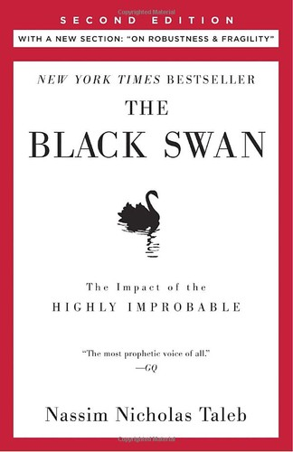

纳西姆·尼古拉斯·塔勒布（Nassim Nicholas Taleb）的《黑天鹅》（The Black Swan）于2007年由兰登书屋出版，是其"不确定性五部曲"（Incerto）中影响力最大的一部。在此之前，塔勒布已凭《随机漫步的傻瓜》在金融圈崭露头角；而《黑天鹅》的出版恰逢2008年全球金融危机前夕，这一巧合使它从一本哲学性的思想著作跃升为全球性的文化现象。《星期日泰晤士报》将其列为二战以来最具影响力的十二本书之一。塔勒布在书中提出的"黑天鹅"概念——极其罕见、无法预测、影响巨大且事后被合理化的事件——如今已成为商业、政治与风险管理领域的通用术语。
塔勒布将"黑天鹅事件"定义为同时具备三个特征的事件：第一，它处于常规预期之外，没有任何过往经验能令人预见其发生；第二，它产生极端的影响，足以改变历史的走向；第三，事件发生后，人类会本能地编造解释，使其显得可以预测和理解——这便是所谓的"叙事谬误"。塔勒布认为，人类的认知结构天生偏好秩序与因果关系，因此我们总是将复杂的随机现象简化为一个个整洁的故事，从而严重低估不确定性。他将世界区分为"平均斯坦"（Mediocristan）与"极端斯坦"（Extremistan）：在平均斯坦中，个体的影响微乎其微，整体呈钟形分布；而在极端斯坦中——金融市场、科技创新、文化传播皆属此类——少数极端事件主宰了几乎全部的后果。正态分布在后者中完全失效，而我们的风险模型、商业计划和政策预测却大多建立在正态假设之上。
全书在哲学层面的深度远超一般的商业读物。塔勒布广泛援引卡尔·波普尔的证伪主义、休谟的归纳问题、塞克斯都·恩披里柯的古典怀疑论，以及丹尼尔·卡尼曼的认知偏差研究，构建了一套关于人类认知局限性的完整论述。他对"专家预测"进行了尖锐的批判——引用菲利普·泰特洛克的研究指出，政治学家和经济学家的长期预测准确度甚至不如随机猜测。他还批评了金融学中对高斯分布的过度依赖，认为这种依赖在2008年的次贷危机中暴露无遗：那些被模型判定为"百万年才会发生一次"的事件，在短短几个月内接连出现。
对于投资者和商业决策者而言，《黑天鹅》的核心启示在于：不要试图预测黑天鹅事件，而要让自己的系统在黑天鹅来临时不会崩溃——甚至能从中受益。塔勒布在后续著作《反脆弱》中将这一思想发展为更完整的框架，但种子已在《黑天鹅》中种下。他建议采用"杠铃策略"——将大部分资源配置在极其安全的资产上，同时将少部分资源投入高度投机性的机会，从而在保护下行风险的同时保留捕获极端上行收益的可能。查理·芒格虽然在方法论上与塔勒布有诸多分歧，但两人在一个根本问题上高度一致：对人类预测能力的深刻怀疑，以及对安全边际的执着追求。